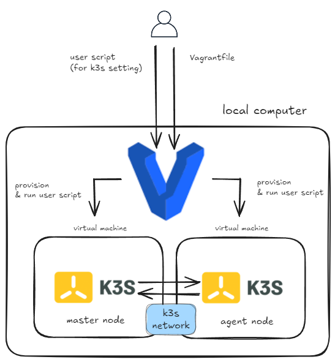

inception-of-things part 1

Intro

42 Seoul의 공통 과정을 마무리하면, 원하는 분야를 선택하여 심화 과제를 수행할 수 있습니다. 그중에서도 ’Inception-of-Things’는 인프라 관련 심화 과제로, 가장 많은 경험치를 얻을 수 있는 과제입니다.
얼핏 보면 매우 어려운 과제처럼 느껴질 수 있지만, 개념을 확실히 이해하고 공부한다면 누구나 빠르게 완료할 수 있다고 생각합니다. 저의 경우, CKA 자격증 취득을 목표로 k8s를 공부하던 중 우연히 팀원을 구하게 되어 이 과제를 수행하게 되었습니다. 배경지식이 어느 정도 있는 상태에서 진행하다 보니, 크게 어렵지 않게 잘 마무리할 수 있었던 것 같습니다.
개요
참고한 자료는 다음과 같습니다:
전체 코드는 비공개 되어있는 상태입니다
개념 설명
cluster는 노드(컴퓨터)들의 논리적인 집합을 의미합니다. 일반적으로, 하나의 컴퓨터로 처리하기 어려운 방대한 양의 작업을 처리하기 위해 도입을 합니다.
클러스터는 특정한 목적을 가지고 있고, 그 안의 노드들을 각자 맡은 역할을 수행합니다. (보통 클러스터 내부의 노드들을 관리하는 master, 작업을 수행하는 worker로 구분할 수 있습니다.) 이때, k8s는 분산된 노드(컴퓨터)들을 하나의 클러스터로 묶어주고, 관리해주는 도구로써 사용할 수 있습니다.
컴퓨팅 능력을 확장할 목적으로 수직적 확장과 수평적 확장을 고려할 수 있습니다.
수직적 확장은 cpu나 memmory 성능을 높여서 단일 노드의 성능을 향상시키는 것을 의미하고, 수평적 확장은 작업을 분산시킬 수 있는 여러 노드를 추가하는 것을 의미합니다.
클러스터링은 수평적으로 확장된 컴퓨팅 리소스들을 그룹화 해주는 것을 의미합니다.
한 가지 주의해야 하는 것은, k8s 자체는 노드를 생성(provision)해주는 도구가 아니라는 것입니다. 즉, provision 단계는 k8s clustering 이전에 진행되어야 합니다.

Part 1에서는 vagrant tool을 이용해서 master, agent 역할을 하는 두 대의 가상 머신을 local에서 provision하고, k3s를 이용해서 clustering 하는 것을 요구합니다. 참고로 k3s는 k8s의 경량화 버전입니다.
코드 설명
파일 구조는 아래와 같습니다.
p1/
├── scripts/
│ ├── agent.yml
│ └── server.yml
└── Vagrantfilevagrant는 local에서 가상 머신을 생성하고, provision을 할 수 있는 도구입니다. 사용자가 원하는 스펙을 Vagrantfile 이름의 파일에 정의하면, vagrant up 명령어를 통해 간단하게 가상머신을 생성할 수 있습니다.
과제 요구사항에 맞게 spec을 정의해줍니다.
Vagrantfile
Vagrant.configure("2") do |config|
config.vm.box = "bento/ubuntu-24.04"
config.vm.box_version = "202404.26.0"
config.vm.define "hyunghkiS" do |control|
control.vm.hostname = "hyunghkiS"
control.vm.network "private_network", ip: "192.168.56.110"
control.vm.provider "virtualbox" do |v|
v.customize ["modifyvm", :id, "--name", "hyunghkiS"]
v.memory = "1024"
v.cpus = "1"
end
# just for evaluation
control.vm.provision "shell", inline: <<-SHELL
sudo apt-get update
sudo apt-get install -y net-tools
SHELL
control.vm.provision "shell", path: "scripts/server.sh"
end
config.vm.define "hyunghkiSW" do |control|
control.vm.hostname = "hyunghkiSW"
control.vm.network "private_network", ip: "192.168.56.111"
control.vm.provider "virtualbox" do |v|
v.customize ["modifyvm", :id, "--name", "hyunghkiSW"]
v.memory = "1024"
v.cpus = "1"
end
# just for evaluation
control.vm.provision "shell", inline: <<-SHELL
sudo apt-get update
sudo apt-get install -y net-tools
SHELL
control.vm.provision "shell", path: "scripts/agent.sh"
end
end저 just for evaluation 부분은 아마 과제 명세서에 ifconfig 명령어를 입력해보는 부분 때문에 추가한 것 같습니다. (사실 이 글을 쓰는 시점은 과제를 수행하고 1년이 지난 시점이라 기억이 가물가물 합니다.)
server.sh
#!/bin/bash
echo 'alias k=kubectl' >> /home/vagrant/.bashrc
source /home/vagrant/.bashrc
curl -sfL https://get.k3s.io | K3S_KUBECONFIG_MODE="644" sh -s - server --node-ip 192.168.56.110
K3S_TOKEN=$(sudo cat /var/lib/rancher/k3s/server/node-token)
echo $K3S_TOKEN > /vagrant/k3s_token # vagrant 공유 폴더에 master token 정보를 저장해주었습니다.agent.sh
#!/bin/bash
echo 'alias k=kubectl' >> /home/vagrant/.bashrc
source /home/vagrant/.bashrc
K3S_TOKEN=$(cat /vagrant/k3s_token) # vagrant 공유 폴더에 저장된 master token 정보를 읽어옵니다.
curl -sfL https://get.k3s.io | K3S_URL=https://192.168.56.110:6443 K3S_TOKEN=$K3S_TOKEN sh -s - --node-ip 192.168.56.111k3s 공식 문서를 참고해서 master와 agent를 clustering 해주는 스크립트를 작성해주었습니다. 각각 노드 안에서 로직이 실행되어, 하나는 master로, 하나는 agent로 역할을 수행하게 됩니다.
Outro
오랜만에 해당 과제의 로직을 다시 보니까 기억이 잘 안납니다.
남은 부분은 천천히 포스팅하겠습니다.